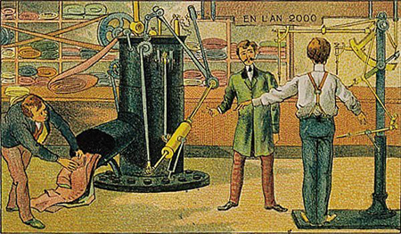

|
Volkan Yýldýrým Önder
Makine Mühendisi
www.volkanonder.blogcu.com
Haziran 2009, Ýstanbul
Kriz sýrasýnda Amerika'nýn dev otomobil firmalarýnýn sýkýntýsýný hayret içerisinde izlemekteyiz. Aslýnda çok basit bir tasarým kavramý probleminin iflasa sürüklediðini söylesek yanlýþ olmaz.
Konuyu biraz daha açmak gerekirse; Pazarýn talep ve beklentilerini karþýlayamayan serbest piyasa koþullarýndaki firmalar "pazara uygun tasarým" yapmadýklarýnda bu kadere razý olmak zorundadýr. Problem sadece konsept olmadýðý kesin; Hýzlý karar verme ve piyasaya ürünü zamanýnda sunma konusunda da yaþanan sýkýntýlar bulunmakta. Amerikan araba üreticileri Amerikan ve dünya insanlarýnýn petrol fiyatlarýyla artýþa gecen az tüketen çevreyi az kirleten vb taleplerini görmekte ve cevap vermekte geç kalmýþlardýr.
Sanat için sanat mý toplum için sanat mý?
Bu soru okurlarda münazara konularýný vazgeçilmezidir. Firmalar ve tasarýmcýlar hep bu konuda bu cümleyi tartýþýp durmuþtur. Toplumun ihtiyaçlarýný karþýlayacak tasarým ya da ürün mü yoksa firmanýn tasarým çizgisinin devamý olan sanatýnýn göstergesi olan tasarý mý?
Firmalarý rakipler pazar maliyetler kanunlar kalifiye personel ihtiyacý vb birçok sorunla boðuþarak hayata kalmaktadýr. "Müþteri kimdir?" sorusu 50 yýl önce iþletme sahibiydi. 20 yýl önce pazarlama departmaný oldu. Son yýllarda ise "gerçek müþteri" tanýmý ortaya çýktý. Üretilen ürüne para ödeyen ve en önemlisi onu baþkalarýna da tavsiye eden ya da yeren kiþi oldu. Müþterinin de tek olmadýðý, ortada gelir sýnýfý ve beðeni guruplarý çok ayrý bir bilim dalý olduðu bilinmektedir...
Bu durumda yapýlan hata nedir?
Bazen üretici tasarýmcý veya karar vericinin müþterinin kimliðiyle ilgili sorun yaþamasý muhtemelledir. Baþarýyý ve gelecekte var olmayý baþarabilecek kurumlar ve kiþiler deðiþime ve müþterin deðiþen taleplerine uyum gösterebilenlerdir. Burada gelecekte parlayan yýldýz olacaklar ise müþterinin beklentisinin üstüne çýkýp ona sürpriz yapabilenler olacaktýr.
Her kör satýcýnýn bir kör alýcýsý var mý?
Bu atasözü giriþimcilere çok söylenir sen üret gerisini düþünme demek gibidir. Aslýnda her ürün gurubunun belirli bir müþteri olduðunu anlatan bu ata sözü þu anki piyasa koþularýnda hýzla deðerini kaybetmektedir. Artýk ne satýcý kördür ne alýcý kördür. Ayný markanýn ayný ürününün satýldýðý fiyatlarý internet aracýlýðýyla birçok yerden karþýlaþtýrabilmektedir. Ayrýca ürünü almýþ kullanmýþ memnuniyet duymuþ müþterilere ulaþabildiði gibi sýkýntý yaþamýþ müþterilere de ulaþabilmektedir.
Bu koþullarda "kör alýcý" ve "kör satýcý" gittikçe azalmaktadýr. Bu piyasa þartlarýnda "pazara uygun tasarým" yapmayan firmalar "kör satýcý" konumunda kalmakta ne kadar büyük olursa olsun pazarý yöneten halkýn talep ve beklentilere uyum saðlamayarak pazarlarýný ve gelecekleri kaybetmektedirler.
Pazara uygun tasarým nasýl yapýlýr?
Terzilik mesleði aslýnda tam bir pazara uygun tasarým iþidir. Müþteriyi ölçer biçer, taleplerini dinler, istediði kumaþý ve aksesuarlarý onunla birlikte seçer ve onun talepleri dinler. Prova eder, taleplerini tekrar dinler. Tüm taleplerin dýþýnda terzi sanatýndan bir þeyler katarak onun beklentilerinin üzerinde bir ürünü onunla anlaþtýðý fiyata müþteriye sunar.
Buradan bakýnca aslýnda terzilik kiþiye özel bir ürün yaptýðý için fiyat performans ve müþteri memnuniyeti açýsýnda mükemmeldir. Hiçbir hazýr giyim eþyasý kaliteli bir terzi elinden çýkan elbise kadar deðerli ve güzel olamaz. Terzinin bir de markalaþmasýyla artýk bir kreasyon bir sanat olur.
Kaynak: www.neubloc.com/news.asp?nid=5
Pazar ve tasarýmcýnýn buluþmasý
Ýþimiz veya ürünümüz ne olursa olsun. Tasarýmcýnýn eðer bir büroda ekranýn baþýnda oturup önüne konan dosyalarla ve kataloglarla yönetimin istediði ürünleri tasarlamaya çalýþýyorsa sorununuz baþlamýþ demektir. Bu sorun sadece sizin sorununuz deðil, 100 yýllýk firmalarýn batmasýna neden olan bir sorunudur.

Nasýl yapalým da pazara uygun tasarým yapalým?
Rakiplerinizden bir fark oluþturmak için naçizane bir tavsiye de bulunak istiyorum; Tasarýmcýnýzdan birisini bir uluslararasý fuara götürün. Satýþ ekibinizle, en büyük müþterilerinizle görüþmeye gönderin. Müþteri þikayetlerini tamamýna ulaþmasýný saðlayýn. Birkaç müþteri þikayetinin çözümü sýrasýnda etkin görev verin. Rakiplerinizin ürünleri satan satýcýlarla müþteri olarak görüþmesini saðlayýn. Tüm bunlarý yaptýktan sonra ondan bir tasarým isteyin. Farký siz de müþteriniz de tasarýmcýnýz da görecektir. Krizler fýrsat zamanlarýdýr. Normal iþ akýþýnda fýrsat bulamadýðýnýz, sizi ileri adým artýracak çalýþmalara büyük bir fýrsattýr...
Not: Uyguladýðýnýzda ortaya çýkan sonuçlarý ve deneyimlerinizi paylaþýrsanýz sevinirim.
|